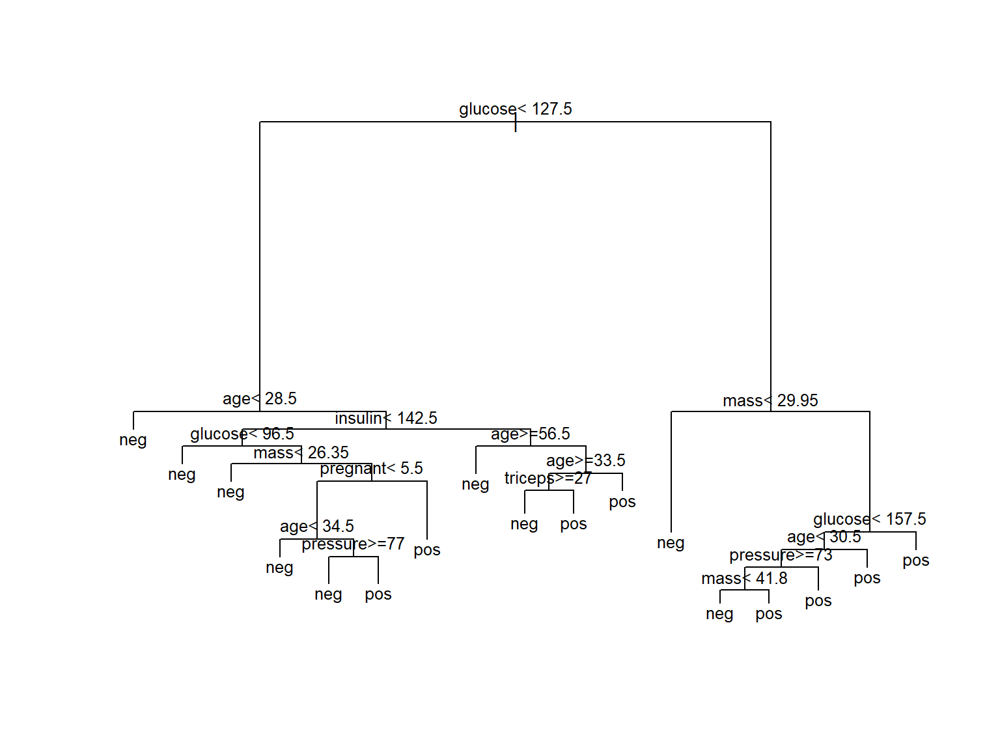
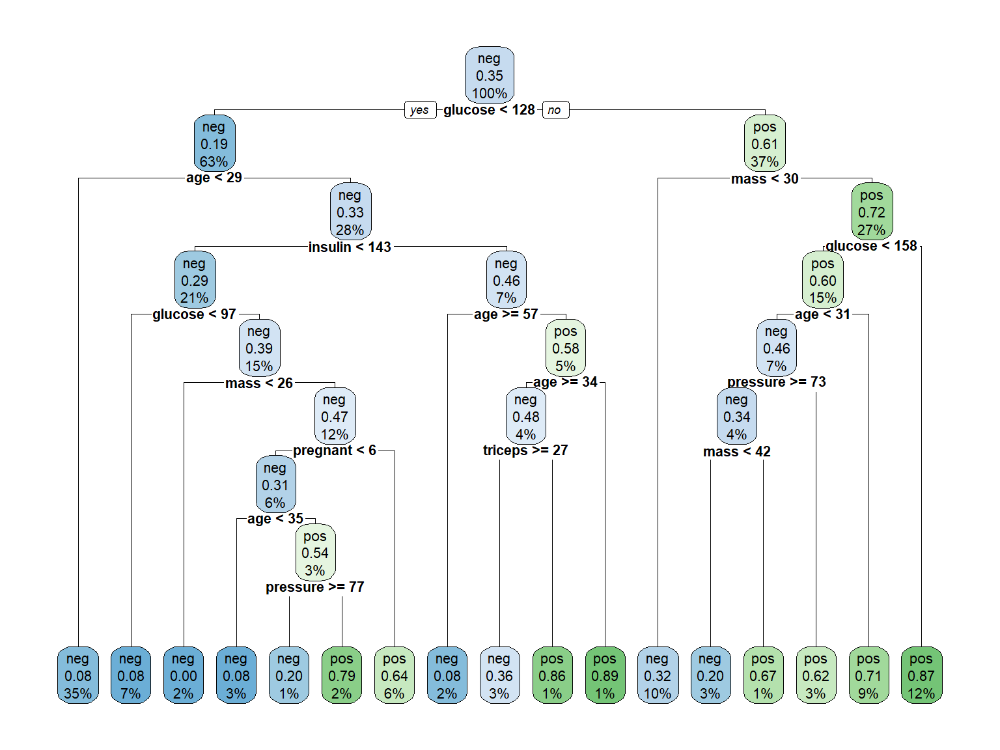
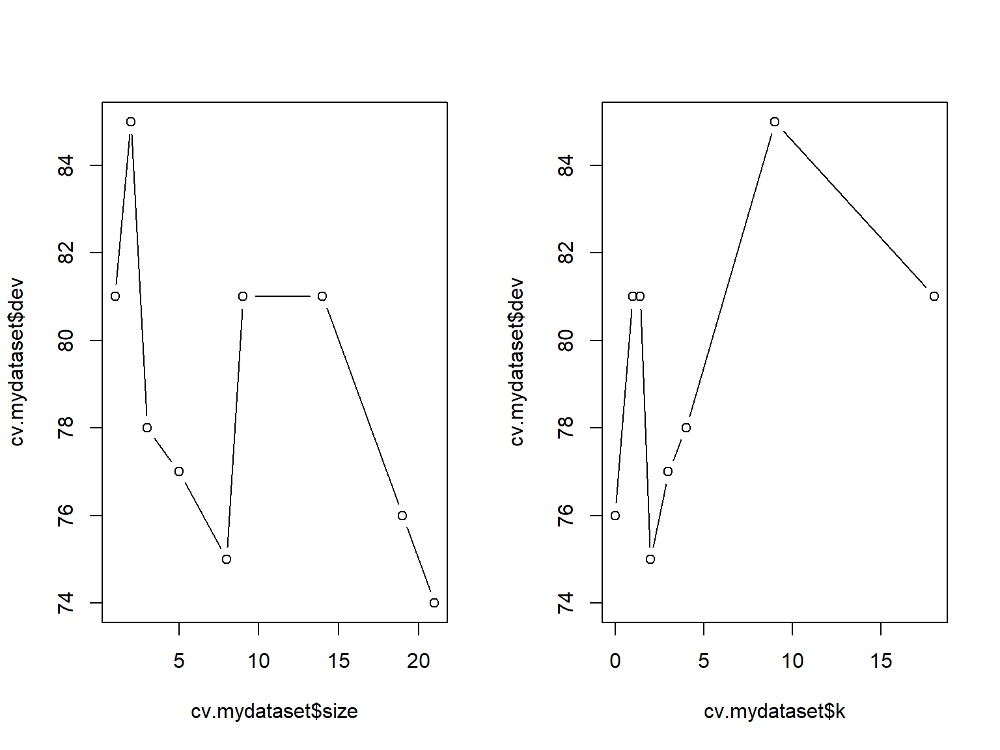
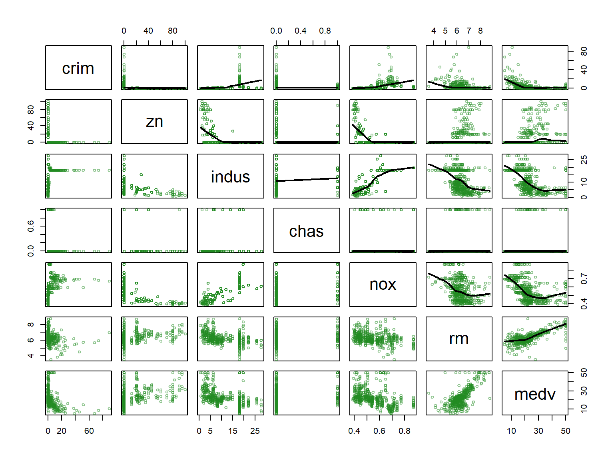
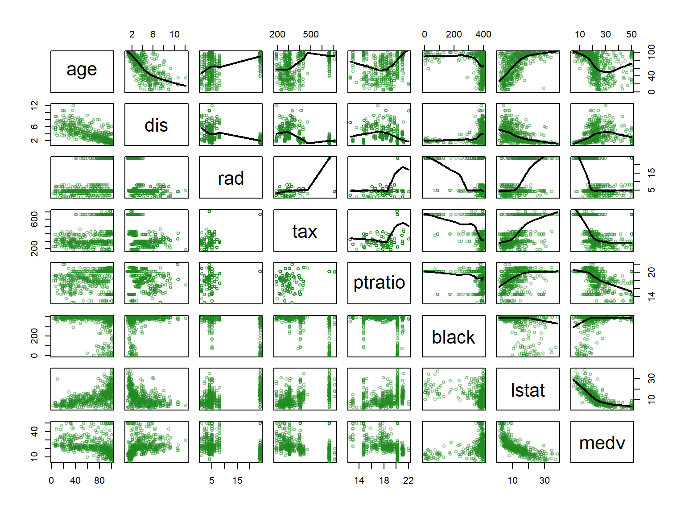
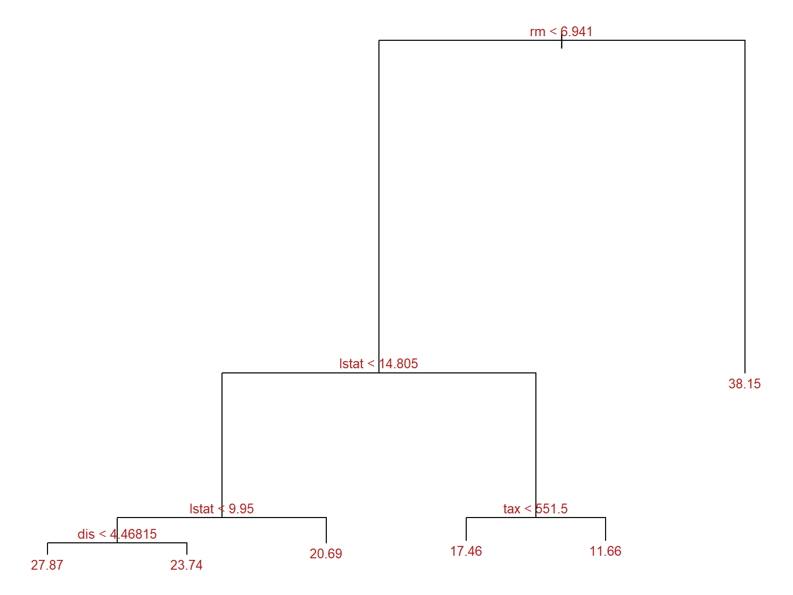
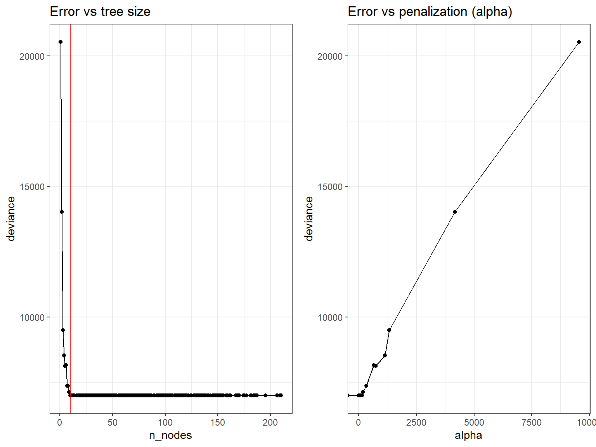
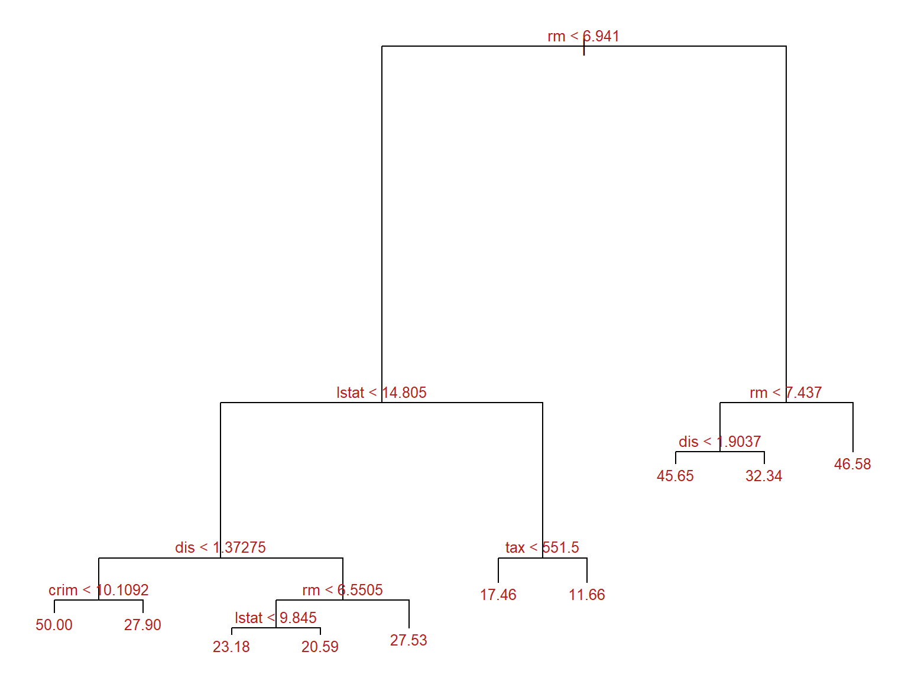

# This chunk is used to do the assignment of values to R variables
# This code must be adapted to any change of datasets or
myDescription <- "The data are a simulated data set containing sales of child car seats at different stores [@james2013introduction]"
mydataset <- CarseatsDecision Trees Lab 1
n <- nrow(mydataset)
p <- ncol(mydataset)Introductory example
The Pima Indians dataset
The Pima Indian Diabetes data set (PimaIndiansDiabetes2) is available in the mlbench package.
The data contains 768 individuals (female) and 9 clinical variables for predicting the probability of individuals in being diabete-positive or negative:
- pregnant: number of times pregnant
- glucose: plasma glucose concentration
- pressure: diastolic blood pressure (mm Hg)
- triceps: triceps skin fold thickness (mm)
- insulin: 2-Hour serum insulin (mu U/ml)
- mass: body mass index (weight in kg/(height in m)^2)
- pedigree: diabetes pedigree function
- age: age (years)
- diabetes: class variable
A typical classification/prediction problem is to build a model that can distinguish and predict diabetes using some or all the variables in the dataset.
A quick exploration can be done wirh the swirl package:
library(skimr)
data("PimaIndiansDiabetes2", package = "mlbench")
skim(PimaIndiansDiabetes2)| Name | PimaIndiansDiabetes2 |
| Number of rows | 768 |
| Number of columns | 9 |
| _______________________ | |
| Column type frequency: | |
| factor | 1 |
| numeric | 8 |
| ________________________ | |
| Group variables | None |
Variable type: factor
| skim_variable | n_missing | complete_rate | ordered | n_unique | top_counts |
|---|---|---|---|---|---|
| diabetes | 0 | 1 | FALSE | 2 | neg: 500, pos: 268 |
Variable type: numeric
| skim_variable | n_missing | complete_rate | mean | sd | p0 | p25 | p50 | p75 | p100 | hist |
|---|---|---|---|---|---|---|---|---|---|---|
| pregnant | 0 | 1.00 | 3.85 | 3.37 | 0.00 | 1.00 | 3.00 | 6.00 | 17.00 | ▇▃▂▁▁ |
| glucose | 5 | 0.99 | 121.69 | 30.54 | 44.00 | 99.00 | 117.00 | 141.00 | 199.00 | ▁▇▇▃▂ |
| pressure | 35 | 0.95 | 72.41 | 12.38 | 24.00 | 64.00 | 72.00 | 80.00 | 122.00 | ▁▃▇▂▁ |
| triceps | 227 | 0.70 | 29.15 | 10.48 | 7.00 | 22.00 | 29.00 | 36.00 | 99.00 | ▆▇▁▁▁ |
| insulin | 374 | 0.51 | 155.55 | 118.78 | 14.00 | 76.25 | 125.00 | 190.00 | 846.00 | ▇▂▁▁▁ |
| mass | 11 | 0.99 | 32.46 | 6.92 | 18.20 | 27.50 | 32.30 | 36.60 | 67.10 | ▅▇▃▁▁ |
| pedigree | 0 | 1.00 | 0.47 | 0.33 | 0.08 | 0.24 | 0.37 | 0.63 | 2.42 | ▇▃▁▁▁ |
| age | 0 | 1.00 | 33.24 | 11.76 | 21.00 | 24.00 | 29.00 | 41.00 | 81.00 | ▇▃▁▁▁ |
Building a classification tree with `rpart``
Start building a simple tree with default parameters
library(rpart)
model1 <- rpart(diabetes ~., data = PimaIndiansDiabetes2)
# par(xpd = NA) # otherwise on some devices the text is clippedThis builds a model consisting of a series of nested decision rules.
print(model1)n= 768
node), split, n, loss, yval, (yprob)
* denotes terminal node
1) root 768 268 neg (0.65104167 0.34895833)
2) glucose< 127.5 485 94 neg (0.80618557 0.19381443)
4) age< 28.5 271 23 neg (0.91512915 0.08487085) *
5) age>=28.5 214 71 neg (0.66822430 0.33177570)
10) insulin< 142.5 164 48 neg (0.70731707 0.29268293)
20) glucose< 96.5 51 4 neg (0.92156863 0.07843137) *
21) glucose>=96.5 113 44 neg (0.61061947 0.38938053)
42) mass< 26.35 19 0 neg (1.00000000 0.00000000) *
43) mass>=26.35 94 44 neg (0.53191489 0.46808511)
86) pregnant< 5.5 49 15 neg (0.69387755 0.30612245)
172) age< 34.5 25 2 neg (0.92000000 0.08000000) *
173) age>=34.5 24 11 pos (0.45833333 0.54166667)
346) pressure>=77 10 2 neg (0.80000000 0.20000000) *
347) pressure< 77 14 3 pos (0.21428571 0.78571429) *
87) pregnant>=5.5 45 16 pos (0.35555556 0.64444444) *
11) insulin>=142.5 50 23 neg (0.54000000 0.46000000)
22) age>=56.5 12 1 neg (0.91666667 0.08333333) *
23) age< 56.5 38 16 pos (0.42105263 0.57894737)
46) age>=33.5 29 14 neg (0.51724138 0.48275862)
92) triceps>=27 22 8 neg (0.63636364 0.36363636) *
93) triceps< 27 7 1 pos (0.14285714 0.85714286) *
47) age< 33.5 9 1 pos (0.11111111 0.88888889) *
3) glucose>=127.5 283 109 pos (0.38515901 0.61484099)
6) mass< 29.95 75 24 neg (0.68000000 0.32000000) *
7) mass>=29.95 208 58 pos (0.27884615 0.72115385)
14) glucose< 157.5 116 46 pos (0.39655172 0.60344828)
28) age< 30.5 50 23 neg (0.54000000 0.46000000)
56) pressure>=73 29 10 neg (0.65517241 0.34482759)
112) mass< 41.8 20 4 neg (0.80000000 0.20000000) *
113) mass>=41.8 9 3 pos (0.33333333 0.66666667) *
57) pressure< 73 21 8 pos (0.38095238 0.61904762) *
29) age>=30.5 66 19 pos (0.28787879 0.71212121) *
15) glucose>=157.5 92 12 pos (0.13043478 0.86956522) *The model can be visualized using a tree:
plot(model1)
text(model1, digits = 3, cex=0.8)
A nicer plot can be obtained using the rpart.plot function from the rpart.plot package. This function allows for multiple tunings, but the default values may already yield a nice informative plot.
rpart.plot(model1, cex=.7)
detach(package:rpart.plot)If we believed the model was ready for use we could use it to predict diabetes for new subject.
Imagine we kow nothing about overfitting. We may want to check the accuracy of the model on the dataset we have used to build it.
predicted.classes<- predict(model1, PimaIndiansDiabetes2, "class")
mean(predicted.classes == PimaIndiansDiabetes2$diabetes)[1] 0.8294271A better strategy is to use train dataset to build the model and a test dataset to check how it works.
set.seed(123)
ssize <- nrow(PimaIndiansDiabetes2)
propTrain <- 0.8
training.indices <-sample(1:ssize, floor(ssize*propTrain))
train.data <- PimaIndiansDiabetes2[training.indices, ]
test.data <- PimaIndiansDiabetes2[-training.indices, ]Now we build the model on the train data and check its accuracy on the test data.
model2 <- rpart(diabetes ~., data = train.data)
predicted.classes.test<- predict(model2, test.data, "class")
mean(predicted.classes.test == test.data$diabetes)[1] 0.7272727The accuracy is good, but smaller, as expected.
A classification tree
Data description
In this section, you should provide a short explanation about problem and the data set.
The data are a simulated data set containing sales of child car seats at different stores (James et al. 2013).
The data set has 400 observations on 11 variables. The variable names are: Sales, CompPrice, Income, Advertising, Population, Price, ShelveLoc, Age, Education, Urban, US.
We start categorizing the variable Sales creating a new variable, High, which takes on a value of Yes if the Sales variable exceeds 8, and a value of No otherwise.
# as.factor() changes the type of variable to factor
mydataset$High=as.factor(ifelse(mydataset$Sales<=8,"No","Yes"))The number of observations for each class is:
kable(table(mydataset$High), caption= "Number of observations for each class", col.names = c('High','Freq'))| High | Freq |
|---|---|
| No | 236 |
| Yes | 164 |
The aim is of this study is to predict the categorical values of sales (High) using all variables but Sales.
It is a classification problem and we will build a classification tree model.
Data summarization
This is a short data set summary
summary(mydataset) Sales CompPrice Income Advertising
Min. : 0.000 Min. : 77 Min. : 21.00 Min. : 0.000
1st Qu.: 5.390 1st Qu.:115 1st Qu.: 42.75 1st Qu.: 0.000
Median : 7.490 Median :125 Median : 69.00 Median : 5.000
Mean : 7.496 Mean :125 Mean : 68.66 Mean : 6.635
3rd Qu.: 9.320 3rd Qu.:135 3rd Qu.: 91.00 3rd Qu.:12.000
Max. :16.270 Max. :175 Max. :120.00 Max. :29.000
Population Price ShelveLoc Age Education
Min. : 10.0 Min. : 24.0 Bad : 96 Min. :25.00 Min. :10.0
1st Qu.:139.0 1st Qu.:100.0 Good : 85 1st Qu.:39.75 1st Qu.:12.0
Median :272.0 Median :117.0 Medium:219 Median :54.50 Median :14.0
Mean :264.8 Mean :115.8 Mean :53.32 Mean :13.9
3rd Qu.:398.5 3rd Qu.:131.0 3rd Qu.:66.00 3rd Qu.:16.0
Max. :509.0 Max. :191.0 Max. :80.00 Max. :18.0
Urban US High
No :118 No :142 No :236
Yes:282 Yes:258 Yes:164
An improved description:
skimr::skim(mydataset)| Name | mydataset |
| Number of rows | 400 |
| Number of columns | 12 |
| _______________________ | |
| Column type frequency: | |
| factor | 4 |
| numeric | 8 |
| ________________________ | |
| Group variables | None |
Variable type: factor
| skim_variable | n_missing | complete_rate | ordered | n_unique | top_counts |
|---|---|---|---|---|---|
| ShelveLoc | 0 | 1 | FALSE | 3 | Med: 219, Bad: 96, Goo: 85 |
| Urban | 0 | 1 | FALSE | 2 | Yes: 282, No: 118 |
| US | 0 | 1 | FALSE | 2 | Yes: 258, No: 142 |
| High | 0 | 1 | FALSE | 2 | No: 236, Yes: 164 |
Variable type: numeric
| skim_variable | n_missing | complete_rate | mean | sd | p0 | p25 | p50 | p75 | p100 | hist |
|---|---|---|---|---|---|---|---|---|---|---|
| Sales | 0 | 1 | 7.50 | 2.82 | 0 | 5.39 | 7.49 | 9.32 | 16.27 | ▁▆▇▃▁ |
| CompPrice | 0 | 1 | 124.97 | 15.33 | 77 | 115.00 | 125.00 | 135.00 | 175.00 | ▁▅▇▃▁ |
| Income | 0 | 1 | 68.66 | 27.99 | 21 | 42.75 | 69.00 | 91.00 | 120.00 | ▇▆▇▆▅ |
| Advertising | 0 | 1 | 6.64 | 6.65 | 0 | 0.00 | 5.00 | 12.00 | 29.00 | ▇▃▃▁▁ |
| Population | 0 | 1 | 264.84 | 147.38 | 10 | 139.00 | 272.00 | 398.50 | 509.00 | ▇▇▇▇▇ |
| Price | 0 | 1 | 115.80 | 23.68 | 24 | 100.00 | 117.00 | 131.00 | 191.00 | ▁▂▇▆▁ |
| Age | 0 | 1 | 53.32 | 16.20 | 25 | 39.75 | 54.50 | 66.00 | 80.00 | ▇▆▇▇▇ |
| Education | 0 | 1 | 13.90 | 2.62 | 10 | 12.00 | 14.00 | 16.00 | 18.00 | ▇▇▃▇▇ |
Preprocess
It is very common that the data need to be preprocessed before training the model
In this case, no cleaning or preprocessing are required.
Train/Test partition of data
In order to properly evaluate the performance of a model, we must estimate the error rather than simply computing the training error.
We
- split the observations into a training set and a test set,
- build the model using the training set, and
- evaluate its performance on the test data.
set.seed(2)
pt <- 1/2
train <- sample(1:nrow(mydataset),pt*nrow(mydataset))
mydataset.test <- mydataset[-train,]
High.test <- mydataset[-train,"High"]The train and tets set have 200 200 observations respectively.
In train data, the number of observations for each class is:
kable(table(mydataset[train,"High"]), caption= "Train data: number of observations for each class",
col.names = c('High','Freq'))| High | Freq |
|---|---|
| No | 119 |
| Yes | 81 |
Train model
We now use the tree() function to fit a classification tree in order to predict High using all variables but Sales using only de train set.
tree.mydataset=tree(High~.-Sales, mydataset,
subset=train, split="deviance")
tree.mydataset2=rpart(High~.-Sales, mydataset,
subset=train)The summary() function lists the variables that are used as internal nodes in the tree, the number of terminal nodes, and the training error rate
summary(tree.mydataset)
Classification tree:
tree(formula = High ~ . - Sales, data = mydataset, subset = train,
split = "deviance")
Variables actually used in tree construction:
[1] "Price" "Population" "ShelveLoc" "Age" "Education"
[6] "CompPrice" "Advertising" "Income" "US"
Number of terminal nodes: 21
Residual mean deviance: 0.5543 = 99.22 / 179
Misclassification error rate: 0.115 = 23 / 200 # summary(tree.mydataset2)We can thus define the deviance of a tree (roughly equivalent to the concept of impurity) as the sum over all leaves of:
\[ -2 \sum_m \sum_k n_{mk} log(\hat{p}_{mk}), \]
where \(n_{mk}\) is the number of observations in the mth terminal node that belong to the kth class. The residual mean deviance reported is simply the deviance divided by \(n - |T_0|\) where \(T_0\) is the number of terminal nodes.
Plot the Tree
The next step is display the tree graphically. We use the plot() function to display the tree structure, and the text()function to display the node labels.
# plot(tree.mydataset)
# require(rpart.plot)
# rpart.plot(tree.mydataset2)
# text(tree.mydataset,pretty=0)It is also possible to show a R print output corresponding to each branch of the tree.
tree.mydatasetnode), split, n, deviance, yval, (yprob)
* denotes terminal node
1) root 200 270.000 No ( 0.59500 0.40500 )
2) Price < 96.5 40 47.050 Yes ( 0.27500 0.72500 )
4) Population < 414 31 40.320 Yes ( 0.35484 0.64516 )
8) ShelveLoc: Bad,Medium 25 34.300 Yes ( 0.44000 0.56000 )
16) Age < 64.5 17 20.600 Yes ( 0.29412 0.70588 )
32) Education < 13.5 7 0.000 Yes ( 0.00000 1.00000 ) *
33) Education > 13.5 10 13.860 Yes ( 0.50000 0.50000 )
66) Education < 16.5 5 5.004 No ( 0.80000 0.20000 ) *
67) Education > 16.5 5 5.004 Yes ( 0.20000 0.80000 ) *
17) Age > 64.5 8 8.997 No ( 0.75000 0.25000 ) *
9) ShelveLoc: Good 6 0.000 Yes ( 0.00000 1.00000 ) *
5) Population > 414 9 0.000 Yes ( 0.00000 1.00000 ) *
3) Price > 96.5 160 201.800 No ( 0.67500 0.32500 )
6) ShelveLoc: Bad,Medium 135 154.500 No ( 0.74074 0.25926 )
12) Price < 124.5 82 107.700 No ( 0.63415 0.36585 )
24) Age < 49.5 34 45.230 Yes ( 0.38235 0.61765 )
48) CompPrice < 130.5 21 28.680 No ( 0.57143 0.42857 )
96) Population < 134.5 6 0.000 No ( 1.00000 0.00000 ) *
97) Population > 134.5 15 20.190 Yes ( 0.40000 0.60000 )
194) Population < 343 7 5.742 Yes ( 0.14286 0.85714 ) *
195) Population > 343 8 10.590 No ( 0.62500 0.37500 ) *
49) CompPrice > 130.5 13 7.051 Yes ( 0.07692 0.92308 ) *
25) Age > 49.5 48 46.330 No ( 0.81250 0.18750 )
50) CompPrice < 124.5 28 14.410 No ( 0.92857 0.07143 )
100) Price < 101.5 8 8.997 No ( 0.75000 0.25000 ) *
101) Price > 101.5 20 0.000 No ( 1.00000 0.00000 ) *
51) CompPrice > 124.5 20 25.900 No ( 0.65000 0.35000 )
102) Price < 119 14 19.410 No ( 0.50000 0.50000 )
204) Advertising < 10.5 9 11.460 No ( 0.66667 0.33333 ) *
205) Advertising > 10.5 5 5.004 Yes ( 0.20000 0.80000 ) *
103) Price > 119 6 0.000 No ( 1.00000 0.00000 ) *
13) Price > 124.5 53 33.120 No ( 0.90566 0.09434 )
26) Population < 393.5 34 0.000 No ( 1.00000 0.00000 ) *
27) Population > 393.5 19 21.900 No ( 0.73684 0.26316 )
54) CompPrice < 143.5 13 7.051 No ( 0.92308 0.07692 ) *
55) CompPrice > 143.5 6 7.638 Yes ( 0.33333 0.66667 ) *
7) ShelveLoc: Good 25 31.340 Yes ( 0.32000 0.68000 )
14) Income < 43 7 8.376 No ( 0.71429 0.28571 ) *
15) Income > 43 18 16.220 Yes ( 0.16667 0.83333 )
30) US: No 6 8.318 Yes ( 0.50000 0.50000 ) *
31) US: Yes 12 0.000 Yes ( 0.00000 1.00000 ) *Prediction
We now evaluate the performance of the classification tree on the test data. The predict() function can be used for this purpose.
tree.pred=predict(tree.mydataset,mydataset.test,type="class")
res <- table(tree.pred,High.test)
res High.test
tree.pred No Yes
No 104 31
Yes 13 52accrcy <- sum(diag(res)/sum(res))The accuracy is 0.78 or misclassification error rate is 0.22.
Prune the tree (Tunning model)
We consider whether pruning the tree could lead to improved results.
set.seed(3)
cv.mydataset=cv.tree(tree.mydataset,FUN=prune.misclass)
names(cv.mydataset)[1] "size" "dev" "k" "method"cv.mydataset$size
[1] 21 19 14 9 8 5 3 2 1
$dev
[1] 74 76 81 81 75 77 78 85 81
$k
[1] -Inf 0.0 1.0 1.4 2.0 3.0 4.0 9.0 18.0
$method
[1] "misclass"
attr(,"class")
[1] "prune" "tree.sequence"Note that, despite the name, dev corresponds to the cross-validation error rate in this instance.
We plot the error rate as a function of both sizeand k.
par(mfrow=c(1,2))
plot(cv.mydataset$size,cv.mydataset$dev,type="b")
plot(cv.mydataset$k,cv.mydataset$dev,type="b")
par(mfrow=c(1,1))We now apply the prune.misclass() function in order to prune the tree to obtain a “best tree”. The best tree is the tree with …
prune.mydataset=prune.misclass(tree.mydataset,
best=cv.mydataset$size[which.min(cv.mydataset$dev)])
plot(prune.mydataset)
text(prune.mydataset,pretty=0)
How well does this pruned tree perform on the test data set?
tree.pred=predict(prune.mydataset,mydataset.test,type="class")
res <- table(tree.pred,High.test)
res High.test
tree.pred No Yes
No 104 32
Yes 13 51accrcy <- sum(diag(res)/sum(res))The accuracy is 0.775.
If we increase the value of best, for example 21 terminal nodes, we obtain a larger pruned tree with lower classification accuracy:
prune.mydataset=prune.misclass(tree.mydataset,
best = cv.mydataset$size[1])
plot(prune.mydataset)
text(prune.mydataset, pretty=0)
tree.pred=predict(prune.mydataset, mydataset.test, type="class")
res <- table(tree.pred, High.test)
res High.test
tree.pred No Yes
No 105 31
Yes 12 52accrcy <- sum(diag(res)/sum(res))The accuracy is 0.785.
A regression tree example
This example is borrowed from (Rodrigo 2017).
The Boston dataset available in the MASS package contains housing prices for the city of Boston, as well as socioeconomic information for the neighborhood in which they are located.
library(MASS)
data("Boston")
datos <- Boston
head(datos, 3) crim zn indus chas nox rm age dis rad tax ptratio black lstat
1 0.00632 18 2.31 0 0.538 6.575 65.2 4.0900 1 296 15.3 396.90 4.98
2 0.02731 0 7.07 0 0.469 6.421 78.9 4.9671 2 242 17.8 396.90 9.14
3 0.02729 0 7.07 0 0.469 7.185 61.1 4.9671 2 242 17.8 392.83 4.03
medv
1 24.0
2 21.6
3 34.7Our goal is to fit a regression model that allows predicting the average price of a home (medv) based on the available variables.
color <- adjustcolor("forestgreen", alpha.f = 0.5)
ps <- function(x, y, ...) { # custom panel function
panel.smooth(x, y, col = color, col.smooth = "black",
cex = 0.7, lwd = 2)
}
pairs(datos[,c(1:6,14)], cex = 0.7, upper.panel = ps, col = color)
pairs(datos[,c(7:14)], cex = 0.7, upper.panel = ps, col = color)
Model fitting
Create a train and test sets
set.seed(123)
train <- sample(1:nrow(datos), size = nrow(datos)/2)
datos_train <- datos[train,]
datos_test <- datos[-train,]We use the tree function of the tree package to build the model. This function grows the tree until it meets a stop condition. By default, these conditions are:
mincut: minimum number of observations that at least one of the child nodes must have for the division to occur.minsize: minimum number of observations a node must have in order for it to be split.
set.seed(123)
arbol_regresion <- tree::tree(
formula = medv ~ .,
data = datos_train,
split = "deviance",
mincut = 20,
minsize = 50
)
summary(arbol_regresion)
Regression tree:
tree::tree(formula = medv ~ ., data = datos_train, split = "deviance",
mincut = 20, minsize = 50)
Variables actually used in tree construction:
[1] "rm" "lstat" "dis" "tax"
Number of terminal nodes: 6
Residual mean deviance: 20.56 = 5078 / 247
Distribution of residuals:
Min. 1st Qu. Median Mean 3rd Qu. Max.
-14.5500 -2.8680 -0.3628 0.0000 2.0050 22.1300 The summary shows that the trained tree has a total of 6 terminal nodes and that the variables rm, lstat, dis and tax have been used as predictors.
In the context of regression trees, the Residual mean deviance term is the residual sum of squares divided by (number of observations - number of terminal nodes). The smaller the deviation, the better the fit of the tree to the training observations.
The tree can be visualized:
par(mar = c(1,1,1,1))
plot(x = arbol_regresion, type = "proportional")
text(x = arbol_regresion, splits = TRUE, pretty = 0, cex = 0.8, col = "firebrick")
Prunning the tree
We use the cv.tree function that uses cross validation to identify the optimal penalty value. By default, this function relies on the deviance to guide the pruning process.
We grow the tree again so we have a big tree to prune:
arbol_regresion <- tree::tree(
formula = medv ~ .,
data = datos_train,
split = "deviance",
mincut = 1,
minsize = 2,
mindev = 0
)
# Optimization
set.seed(123)
cv_arbol <- tree::cv.tree(arbol_regresion, K = 5)The function returns an object cv_arbol containing:
size: The size (number of terminal nodes) of each tree.dev: The cross-validation test error estimate for each tree size.k: The range of penalty values \(\alpha\) evaluated.method: The criteria used to select the best tree.
These can be used to visualize and understand the optimization performed.
size_optimo <- rev(cv_arbol$size)[which.min(rev(cv_arbol$dev))]
paste("Optimal size obtained is:", size_optimo)[1] "Optimal size obtained is: 10"library(ggplot2)
library(ggpubr)
resultados_cv <- data.frame(
n_nodes = cv_arbol$size,
deviance = cv_arbol$dev,
alpha = cv_arbol$k
)
p1 <- ggplot(data = resultados_cv, aes(x = n_nodes, y = deviance)) +
geom_line() +
geom_point() +
geom_vline(xintercept = size_optimo, color = "red") +
labs(title = "Error vs tree size") +
theme_bw()
p2 <- ggplot(data = resultados_cv, aes(x = alpha, y = deviance)) +
geom_line() +
geom_point() +
labs(title = "Error vs penalization (alpha)") +
theme_bw()
ggarrange(p1, p2)
Once the optimal value identified, the final pruning is applied with the prune.tree function. This function also accepts the optimal value of \(\alpha\) instead of size.
arbol_final <- tree::prune.tree(
tree = arbol_regresion,
best = size_optimo
)
par(mar = c(1,1,1,1))
plot(x = arbol_final, type = "proportional")
text(x = arbol_final, splits = TRUE, pretty = 0, cex = 0.8, col = "firebrick")
Predicting with the model
We can use both, original and pruned trees to predict the data for the test set.
The quality of the prediction is based in the Root Mean Square.
For the original tree one has:
predicciones <- predict(arbol_regresion, newdata = datos_test)
test_rmse <- sqrt(mean((predicciones - datos_test$medv)^2))
paste("Error de test (rmse) del árbol inicial:", round(test_rmse,2))[1] "Error de test (rmse) del árbol inicial: 5.43"And for the final tree:
predicciones_finales <- predict(arbol_final, newdata = datos_test)
test_rmse <- sqrt(mean((predicciones - datos_test$medv)^2))
paste("Error de test (rmse) del árbol final:", round(test_rmse,2))[1] "Error de test (rmse) del árbol final: 5.43"Exercises
This problem involves the \(O J\) data set which is part of the ISLR2 package.
- Create a training set containing a random sample of 800 observations, and a test set containing the remaining observations.
- Fit a tree to the training data, with Purchase as the response and the other variables as predictors. Use the summary () function to produce summary statistics about the tree, and describe the results obtained. What is the training error rate? How many terminal nodes does the tree have?
- Type in the name of the tree object in order to get a detailed text output. Pick one of the terminal nodes, and interpret the information displayed.
- Create a plot of the tree, and interpret the results.
- Predict the response on the test data, and produce a confusion matrix comparing the test labels to the predicted test labels. What is the test error rate?
- Apply the cv.tree() function to the training set in order to determine the optimal tree size.
- Produce a plot with tree size on the \(x\)-axis and cross-validated classification error rate on the \(y\)-axis.
- Which tree size corresponds to the lowest cross-validated classification error rate?
- Produce a pruned tree corresponding to the optimal tree size obtained using cross-validation. If cross-validation does not lead to selection of a pruned tree, then create a pruned tree with five terminal nodes.
- Compare the training error rates between the pruned and unpruned trees. Which is higher?
- Compare the test error rates between the pruned and unpruned trees. Which is higher?
Once you have solved the exercise, try to repeat it using another R package, either rpàrt or caret. Compare the results obtained and comment about the differences observed.
References
James, Gareth, Daniela Witten, Trevor Hastie, and Robert Tibshirani. 2013. An Introduction to Statistical Learning. Vol. 112. Springer.
Rodrigo, Joaquín Amat. 2017. “Arboles de Decision, Random Forest, Gradient Boosting y C5.0.” https://www.cienciadedatos.net/documentos/33_arboles_de_prediccion_bagging_random_forest_boosting#Introducci%C3%B3n.